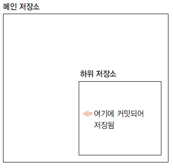
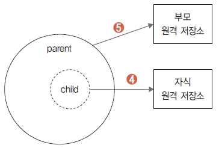

메인 저장소를 서브모듈 형태로 변경했습니다. 메인 저장소에는 서브 저장소의 연결 정보만 있습 니다. 메인 저장소에 등록된 서브 저장소는 독립된 별도의 저장 공간입니다.
독립된 자식 저장소에서 새롭게 작업해 봅시다. 먼저 메인 저장소 내용을 확인해 보겠습니다.
infoh@DESKTOP MINGW64 /e/gitstudy11_parent (master)
$ ls
child/ parent.htm
메인 저장소에 등록된 서브모듈의 폴더로 이동합니다.
infoh@DESKTOP MINGW64 /e/gitstudy11_parent (master)
$ cd child
child는 자식 저장소의 원격 저장소를 복제한 폴더입니다. 서브 폴더 안의 내용을 확인합니다.
infoh@DESKTOP MINGW64 /e/gitstudy11_parent/child (master)
$ ls -all
total 6
drwxr-xr-x 1 infoh 197609 0 5월 25 15:27 .
drwxr-xr-x 1 infoh 197609 0 5월 25 15:27 ..
-rw-r--r-- 1 infoh 197609 30 5월 25 15:27 .git
-rw-r--r-- 1 infoh 197609 25 5월 25 15:27 child.htm
child 폴더 안에 또 다른 숨긴 저장소인 .git 폴더가 있습니다. 서브 폴더는 서브모듈로 분리한 독립 된 깃 저장소입니다.
모듈로 등록된 자식 저장소를 수정합시다. 메인 저장소의 child 폴더에서 child.htm 파일의 내용 을 수정합니다.
infoh@DESKTOP MINGW64 /e/gitstudy11_parent/child (master)
$ code child.htm
child.htm
<h1>자식 저장소</h1>
<h2>child는 서브모듈입니다.</h2>
파일을 수정한 후 서브 폴더 안에서 깃 상태를 확인합니다.
infoh@DESKTOP MINGW64 /e/gitstudy11_parent/child (master)
$ git status 서
On branch master
Your branch is up to date with 'origin/master'.
Changes not staged for commit:
(use "git add <file>..." to update what will be committed)
(use "git checkout -- <file>..." to discard changes in working directory)
modified: child.htm
no changes added to commit (use "git add" and/or "git commit -a")
child 폴더 안의 파일을 수정했습니다. 서브 폴더도 독립된 깃 저장소이기 때문에 status 명령어 로 상태를 추적할 수 있습니다.
이번에는 상위인 메인 저장소의 폴더로 이동합니다. 여기서 다시 상태를 확인합니다.
infoh@DESKTOP MINGW64 /e/gitstudy11_parent/child (master)
$ cd .. 상위 메인 저장소로 이동
infoh@DESKTOP MINGW64 /e/gitstudy11_parent (master)
$ git status 상위 폴더의 상태 확인
On branch master
Changes not staged for commit:
(use "git add <file>..." to update what will be committed)
(use "git checkout -- <file>..." to discard changes in working directory)
(commit or discard the untracked or modified content in submodules)
modified: child (modified content) 서브모듈 폴더가 변경됨
no changes added to commit (use "git add" and/or "git commit -a")
메인 저장소의 상위 폴더에서는 child 폴더만 변경했다고 출력합니다. child 서브 폴더 안에서는 자 식 저장소의 변경된 파일만 추적하고, 상위 메인 저장소에서는 서브모듈의 저장소 자체를 추적합 니다.
diff 명령어로 확인해 봅시다.
infoh@DESKTOP MINGW64 /e/gitstudy11_parent (master)
$ git diff 커밋 비교
diff --git a/child b/child
--- a/child
+++ b/child
@@ -1 +1 @@
-Subproject commit 257378745eb0929a2f416fb51b34c4bdce4d29ce
+Subproject commit 257378745eb0929a2f416fb51b34c4bdce4d29ce-dirty 서브모듈 저장소를
<a name=”13></a>
parent/child 저장소의 내용을 수정했습니다. 자식의 서브 폴더 저장소에서 수정한 내용을 커밋 합시다. 먼저 메인 저장소의 parent/child 폴더로 이동합니다.
infoh@DESKTOP MINGW64 /e/gitstudy11_parent (master)
$ cd child
infoh@DESKTOP MINGW64 /e/gitstudy11_parent/child (master)
$ git commit -am "add content of child" 등록 및 커밋
[master a7709f5] add content of child
1 file changed, 2 insertions(+), 1 deletion(-)
커밋했습니다. 이 커밋은 메인 저장소에서 하위로 복제 생성된 자식 저장소에만 커밋하는 것입니 다. 저장소 상태를 다시 확인합니다.
그림 11-9 커밋해서 저장한 저장소 위치

infoh@DESKTOP MINGW64 /e/gitstudy11_parent/child (master)
$ git status 서
On branch master
Your branch is ahead of 'origin/master' by 1 commit.
(use "git push" to publish your local commits)
nothing to commit, working tree clean
커밋으로 메인 저장소 안에 있는 복제된 자식 저장소가 깨끗한 상태입니다. 복제된 자식 저장소에 만 커밋했을 뿐, 수정한 내용을 자식의 원격 저장소에는 아직 전송하지 않았습니다.p arent/child 에는 자식의 원격 저장소보다 앞선 커밋들이 있습니다.
parent/child 폴더에서 원격 저장소 정보를 확인해 봅시다. remote 명령어로 목록을 확인합니다.
infoh@DESKTOP MINGW64 /e/gitstudy11_parent/child (master)
$ git remote -v 서브 폴더
origin https://github.com/jinygit/gitstudy11_child.git (fetch)
origin https://github.com/jinygit/gitstudy11_child.git (push)
서브모듈을 추가할 때 원격 저장소를 복제합니다. 복제할 때 원격 저장소의 정보들이 자동으로 설 정됩니다. parent/child의 원격 저장소로 수정된 커밋을 푸시합니다.
infoh@DESKTOP MINGW64 /e/gitstudy11_parent/child (master)
$ git push 서브 폴더
Enumerating objects: 5, done.
Counting objects: 100% (5/5), done.
Delta compression using up to 8 threads
Compressing objects: 100% (2/2), done.
Writing objects: 100% (3/3), 311 bytes | 155.00 KiB/s, done.
Total 3 (delta 0), reused 0 (delta 0)
To https://github.com/jinygit/gitstudy11_child.git
2573787..a7709f5 master -> master
parent/child 저장소에서 수정된 커밋을 원격 저장소로 전송했습니다. 다시 상태를 확인해 봅시다.
infoh@DESKTOP MINGW64 /e/gitstudy11_parent/child (master)
$ git status 상태 확인
On branch master
Your branch is up to date with 'origin/master'.
nothing to commit, working tree clean
parent/child와 자식의 원격 저장소를 모두 갱신한 상태입니다.
parent/child 폴더의 저장소에서 수정 작업을 했습니다. 이제 상위 메인 저장소로 이동하여 부모 저장소의 상태를 다시 확인해 보겠습니다.
infoh@DESKTOP MINGW64 /e/gitstudy11_parent/child (master)
$ cd ..
infoh@DESKTOP MINGW64 /e/gitstudy11_parent (master)
$ git status 상
On branch master
Your branch is ahead of 'origin/master' by 1 commit.
(use "git push" to publish your local commits)
Changes not staged for commit:
(use "git add <file>..." to update what will be committed)
(use "git checkout -- <file>..." to discard changes in working directory)
modified: child (new commits)
no changes added to commit (use "git add" and/or "git commit -a")
메인 저장소를 살펴보니 child 폴더의 저장소가 변경된 상태를 가리킵니다. 메인 저장소의 parent/child 폴더를 수정한 후 커밋했다면, 메인 저장소의 서브모듈도 변경됩니다. 이 변경 사 항을 커밋하여 기록합니다. 메인 저장소를 커밋하고 다시 상태를 살펴봅시다.
infoh@DESKTOP MINGW64 /e/gitstudy11_parent (master)
$ git commit -am "child update"
[master d302a0b] child update
1 file changed, 1 insertion(+), 1 deletion(-)
infoh@DESKTOP MINGW64 /e/gitstudy11_parent (master)
$ git status
On branch master
Your branch is ahead of 'origin/master' by 2 commits.
(use "git push" to publish your local commits)
nothing to commit, working tree clean
커밋으로 변경된 사항을 기록했습니다. 메인 저장소도 변경된 커밋 때문에 원격 저장소로 미전송 된 ahead가 남아 있습니다. 메인 저장소의 원격 저장소 목록을 확인합니다.
infoh@DESKTOP MINGW64 /e/gitstudy11_parent (master)
$ git remote -v 상위 폴더
origin https://github.com/jinygit/gitstudy11_parent.git (fetch)
origin https://github.com/jinygit/gitstudy11_parent.git (push)
부모 메인 저장소의 원격 저장소 주소가 출력됩니다.
Note: 메인 저장소와 서브 저장소에 연결된 원격 저장소 주소는 서로 다릅니다. 각 저장소의 폴더에서 remote 명령어로 확인할 수 있습니다.
메인 저장소의 커밋을 전송합니다. 서브모듈은 원격 저장소와 연결되어 있기 때문에 저장소마다 푸시해야 합니다.
infoh@DESKTOP MINGW64 /e/gitstudy11_parent (master)
$ git push
Enumerating objects: 6, done.
Counting objects: 100% (6/6), done.
Delta compression using up to 8 threads
Compressing objects: 100% (5/5), done.
Writing objects: 100% (5/5), 649 bytes | 162.00 KiB/s, done.
Total 5 (delta 0), reused 0 (delta 0)
To https://github.com/jinygit/gitstudy11_parent.git
6a9851e..d302a0b master -> master
그림 11-10 서브모듈의 구성과 원격 서버의 연결 상태
